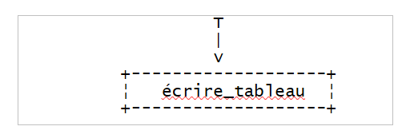
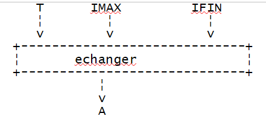
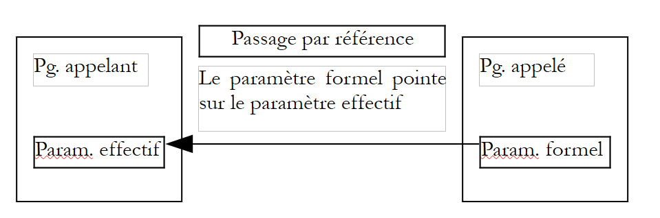

5. 函数与过程
5.1. VBScript 的预定义函数
一种语言的丰富性很大程度上源于其函数库，这些函数可以封装在对象中，并以方法的形式存在。从这一角度来看，VBScript 可以说功能较为匮乏。
下表列出了 VBScript 中的非对象函数。我们在此不作详细说明。这些函数的名称通常能反映其作用。读者可查阅文档以获取特定函数的详细信息。
Abs | Array | Asc | Atn |
CBool | CByte | CCur | CDate |
CDbl | Chr | CInt | CLng |
转换 | Cos | CreateObject | CSng |
日期 | DateAdd | DateDiff | DatePart |
DateSerial | DateValue | 日 | 衍生数学 |
评估 | Exp | Filter | FormatCurrency |
FormatDateTime | FormatNumber | FormatPercent | GetLocale |
GetObject | GetRef | 十六进制 | 小时 |
InputBox | InStr | InStrRev | 国际，固定 |
IsArray | IsDate | IsEmpty | IsNull |
IsNumeric | IsObject | 加入 | LBound |
LCase | 左 | 长度 | LoadPicture |
日志 | LTrim；RTrim；以及修边 | 数学 | 中 |
Minute | Month | MonthName | MsgBox |
现在 | 10月 | 替换 | RGB |
右 | Rnd | Round | ScriptEngine |
ScriptEngineBuildVersion | ScriptEngineMajorVersion | ScriptEngineMinorVersion | 第二 |
SetLocale | 签名 | Sin | 空格 |
分隔 | Sqr | StrComp | 字符串 |
Tan | 时间 | Timer | TimeSerial |
TimeValue | TypeName | UBound | UCase |
VarType | 工作日 | WeekdayName | 年 |
5.2. 模块化编程
描述一个问题的编程解决方案，就是描述计算机能够执行的一系列基本操作，这些操作能够解决该问题。根据编程语言的不同，这些基本操作的复杂程度各异。例如：
- 从键盘或磁盘读取数据
- 将数据输出到屏幕、打印机、磁盘等
- 计算表达式
- 在文件中移动
- ……
描述一个复杂的问题可能需要数千条甚至更多的这类基本指令。因此，人类的大脑很难对一个程序有一个整体的把握。 鉴于难以全面把握问题，我们将其分解为更易解决的子问题。考虑以下问题：对通过键盘输入的数值列表进行排序，并在屏幕上显示排序后的列表。
首先，我们可以将解决方案描述为以下形式：
début
lire les valeurs et les mettre dans un tableau T
trier le tableau T
écrire les valeurs triées du tableau T à l'écran
fin
我们将该问题分解为3个子问题，以便于解决。算法描述通常比前文更为规范，因此该算法可表述为：
其中 T 代表一个数组。运算
是必须通过基本操作来描述的非基本操作。这通常在所谓的模块中实现。数据 T 被称为模块的参数。它是调用程序传递给被调用模块的信息（输入参数），或是从被调用模块接收到的信息（输出参数）。 因此，模块的参数就是调用程序与被调用模块之间交换的信息。
模块 lire_tableau(T) |  |
模块 trier_tableau(T) |  |
模块 écrire_tableau(T) |  |
模块 lire_tableau(T) 可描述如下：
début
écrire "Tapez la suite de valeurs à trier sous la forme val1 val2 ... : "
lire valeurs
construire tableau T à partir de la chaîne valeurs
fin
至此，我们已对模块lire_tableau进行了充分的描述。事实上，这三个必要操作在VBScript中都有直接对应的实现。最后一个操作需要使用split函数。如果VBScript没有这个函数，那么操作3就必须进一步分解为在VBScript中具有直接对应实现的基本操作。
écrire_tableau(T)模块可描述如下：
début
construire chaîne texte "valeur1,valeur2,...." à partir du tableau T
écrire texte
fin
模块 écrire_tableau(T) 可描述如下（假设 T 中元素的索引从 0 开始）：
début
N<-- indice dernier élément du tableau T
pour IFIN variant de N à 1
faire
//查找 T 中最大元素的索引 IMAX
// IFIN 是 T 中最后一个元素的索引
chercher_max(T, IFIN, IMAX)
// 将 T 中最大的元素与 T 的最后一个元素互换
échanger (T, IMAX, IFIN)
finfaire
FIN
此处算法再次使用了非基本操作：
. chercher_max(T, IFIN, IMAX)
. échanger(T, IMAX, IFIN)
chercher_max(T, IFIN, IMAX) 返回数组 T 中最大元素的索引 IMAX，该数组的最后一个元素的索引为 IFIN。
 |
交换(T, IMAX, IFIN) 交换数组 T 中索引为 IMAX 和 IFIN 的两个元素。
 |
因此，需要描述新的非基本操作。
模块 chercher_max(A, IFIN, IMAX) | |
交换模块(T IMAX, IFIN) |
初始问题已通过VBScript的基本操作进行了完整描述，因此现在可以将其转换为该语言。 需要注意的是，基础操作在不同语言中可能存在差异，因此问题分析在某个阶段必须考虑所使用的编程语言。一种语言中存在的对象在另一种语言中可能不存在，从而导致所用算法的改变。因此，如果某种语言具备排序函数，那么在此处不使用它便是荒谬的。
此处应用的原则即所谓的“自顶向下分析法”。若将解决方案的框架表示出来，则如下所示：
 |
这是一个树形结构。
5.3. VBScript 函数与过程
完成模块化分析后，程序员可将算法的各个模块转换为 VBScript 代码 fonctions 或 procédures。 fonctions 和 procédures 都支持输入/输出参数，但 fonction 返回的结果允许在表达式中使用，而 procédure 则不返回此类结果。
5.3.1. VBScript 函数和过程的声明
VBScript 过程的声明如下
而函数的声明如下
为了返回结果，该函数必须包含一条将结果赋值给名为该函数的变量的语句：
函数名=结果
函数或子程序的执行有两种结束方式：
- 遇到函数结束语句（end function）或子程序结束语句（end sub）时
- 遇到函数退出语句（exit function）或子程序退出语句（exit sub）
对于函数，需注意在函数以 end function 或 exit function 结束之前，必须已将结果赋值给一个与函数同名的变量。
5.3.2. 函数或子程序的参数传递模式
在函数或子程序的输入/输出参数声明中，需指定调用程序向被调用程序传递参数的模式（byRef,byVal）：
sub nomProcédure([Byref/Byval] param1, [Byref/Byval] param2, ...)
function nomFonction([Byref/Byval] param1, [Byref/Byval] param2, ...)
当未指定 byRef 或 byVal 传输模式时，将使用 byRef 模式。
实际参数、形式参数
假设有一个由以下代码定义的 VBScript 函数
在函数或存储过程定义中使用的参数 parmamFormi 称为形式参数。可以通过以下语句从主程序或其他模块调用上述函数：
在调用函数或过程时使用的参数称为实际参数。当函数开始执行时，形式参数将接收相应实际参数的值。 关键字 byRef 和 byVal 用于确定这些值的传递模式。
按值传递模式 (byVal)
当形式参数指定此传递模式时，形式参数和实际参数即为两个不同的变量。 在函数或过程执行之前，实际参数的值会被复制到形式参数中。如果函数或过程在执行过程中修改了形式参数的值，这不会改变相应实际参数的值。这种传递方式非常适合函数或过程的输入参数。
 |
引用传递模式 (byRef)
如果未指定参数的传递模式，则默认采用此传递模式。当形式参数指定此传递模式时，形式参数与相应的实际参数是同一个变量。因此，如果函数修改了形式参数，实际参数也会随之改变。此传递模式非常适合：
- 输出参数，因为其值必须传递给调用程序
- 需要费力复制输入参数的情况，例如数组
 |
以下程序展示了参数传递的示例：
程序
Sub proc1(byval i, ByRef j, k)
' i 按值传递（byval）——此时实际参数与形式参数不同
' j 按值传递（byval）——此时实际参数与形式参数是相同的
' k 的传递模式未指定。默认情况下，它是按引用传递
i=i+1
j=j+1
k=k+1
affiche "dans proc1",i,j,k
End Sub
Sub affiche(byval msg, ByVal i, ByVal j, ByVal k)
' 显示 i、j 和 k 的值
wscript.echo msg & " i=" & i & " j=" & j & " k=" & k
End Sub
' ------------- 函数和过程调用
' 初始化 i 和 j
i=4:j=5 : k=6
' 验证
affiche "dans programme principal, avant l'appel à proc1 :",i,j,k
' 调用过程 proc1
proc1 i,j,k
' 验证
affiche "dans programme principal, après l'appel à proc1 :",i,j,k
' 结束
wscript.quit 0
结果
dans programme principal, avant l'appel à proc1 : i=4 j=5 k=6
dans proc1 i=5 j=6 k=7
dans programme principal, après l'appel à proc1 : i=4 j=6 k=7
注释
- 在 VBScript 脚本中，函数和过程没有特定的位置。它们可以出现在源代码的任何位置。通常，我们会将它们集中放在开头或结尾，并确保主程序构成一个连续的代码块。
5.3.3. 函数和过程的调用语法
假设有一个过程 p，其形式参数为 pf1、pf2、...
- 对过程 p 的调用形式如下
参数周围不加圆括号
- 如果过程 p 不接受任何参数，则可以随意使用调用 p 或 p()，以及声明 sub p 或 sub p()
设函数 f 接受形式参数 pf1、pf2、...
- 对函数 f 的调用采用以下形式
参数周围的圆括号是必需的。如果函数 f 不接受任何参数，则可以无差别地使用调用 f 或 f() 以及声明 function f 或 function f()。
- 调用程序可以忽略函数 f 的返回值。此时，函数 f 被视为一个过程，并遵循过程的调用规则。因此，调用函数 f 时应写为 f pe1, pe2, ...（不带括号）。
如果该函数或过程是对象的方法，规则似乎会有所不同且不尽相同。
- 因此，我们可以写成 MyFile.WriteLine "这是一个测试。" 或 MyFile.WriteLine("这是一个测试。")
- 但虽然可以写成 wscript.echo 4，却不能写成 wscript.echo(4)。
我们将遵循以下规则：
- 作为过程使用的过程或函数的参数周围不加括号
- 函数参数周围应使用括号
5.3.4. 一些函数示例
以下是函数定义和使用的几个示例：
程序
Function plusgrandque(byval i, ByVal j)
' 如果 i>j，则布尔值为真，否则为假
' 数据验证
If isnumeric(i) And isnumeric(j) Then
If i>j Then
plusgrandque=true
Else
plusgrandque=false
End If
Else
wscript.echo "Arguments (" & i & "," & j & ") erronés"
plusgrandque=false
End If
Exit Function
End Function
Function rendUnTableau(byval n)
' 返回一个包含 n 个元素的数组
tableau=array()
' 验证参数 n 的有效性
If isnumeric(n) And n>=1 Then
ReDim Preserve tableau(n)
For i= 0 To n-1
tableau(i)=i
Next
Else
wscript.echo "Argument [" & n & "] erroné"
End If
' 返回结果
rendUnTableau=tableau
End Function
Function argumentsVariables(byref arguments)
' 参数是一个数字数组，返回其和
somme=0
For i=0 To ubound(arguments)
somme=somme+arguments(i)
Next
argumentsVariables=somme
End Function
' 两个无参数函数，以两种不同方式声明
Function sansParametres1
sansParametres=4
End Function
Function sansParametres2()
sansParametres=4
End Function
' ------------- 函数和过程的调用
' 调用函数 plusgrandque
wscript.echo "plusgrandque(10,6)=" & plusgrandque(10,6)
wscript.echo "plusgrandque(6,10)=" & plusgrandque(6,10)
wscript.echo "plusgrandque(6,6)=" & plusgrandque(6,6)
wscript.echo "plusgrandque(6,'a')=" & plusgrandque(6,"a")
' 调用函数 rendUnTableau
monTableau=rendUnTableau(10)
For i=0 To ubound(monTableau)
wscript.echo monTableau(i)
Next
monTableau=rendUnTableau(-6)
For i=0 To ubound(monTableau)
wscript.echo monTableau(i)
Next
' 调用函数 argumentsVariables
wscript.echo "somme=" & argumentsVariables(array(-1,2,7,8))
wscript.echo "somme=" & argumentsVariables(array(-1,10,12))
' 无参数函数调用
res=sansParametres1
res=sansParametres1()
sansParametres1
sansParametres1()
res=sansParametres2
res=sansParametres2()
sansParametres2
sansParametres2()
' 结束
wscript.quit 0
结果
plusgrandque(10,6)=Vrai
plusgrandque(6,10)=Faux
plusgrandque(6,6)=Faux
Arguments (6,a) erronés
plusgrandque(6,'a')=Faux
0
1
2
3
4
5
6
7
8
9
Argument [-6] erroné
somme=16
somme=21
somme=10
注释
- 函数 rendUnTableau 表明，一个函数可以返回多个结果，而不仅仅是一个。只需将它们放入一个数组变量中，并将该变量作为结果返回即可。
- 反之，函数 argumentsVariables 则说明可以编写一个接受可变数量参数的函数。同样，只需将参数放入一个数组变量中，并将该变量作为函数的参数即可。
5.3.5. 函数的输出参数或结果
假设应用程序分析表明需要一个具有输入参数 Ei 和输出参数 Sj 的模块 M。需要提醒的是，输入参数是调用程序提供给被调用程序的信息，而输出参数则是被调用程序提供给调用程序的信息。在 VBScript 中，针对输出参数有多种解决方案：
- 如果只有一个输出参数，可以将其设为函数的返回值。这样就不再有输出参数，而仅仅是一个函数返回值。
- 如果有 n 个输出参数，其中一个可以作为函数返回值，其余 n-1 个仍为输出参数。也可以不使用函数，而使用一个具有 n 个输出参数的存储过程。还可以使用一个函数，该函数将返回一个数组，其中包含要返回给调用程序的 n 个值。 需注意，被调用程序通常通过值传递方式将结果返回给调用程序。而当输出参数采用引用传递时，则可避免这种值复制操作。因此，采用引用传递方案能节省时间。
5.4. Vbscript数值排序程序
我们曾通过研究键盘输入数值排序的算法，开启了关于模块化编程的讨论。以下是该算法的VBScript语言实现：
程序
' 主程序
Option Explicit
Dim T ' le tableau de valeurs à trier
' 读取值
T=lire_tableau
' 对值进行排序
trier_tableau T
' 显示排序后的值
ecrire_tableau T
' 结束
wscript.quit 0
' ---------- 函数与过程
' -------- lire_tableau
Function lire_tableau
' 请求值
wscript.stdout.write "Tapez les valeurs à trier sous la forme val1 val2 ... valn : "
' 读取这些值
Dim valeurs
valeurs=wscript.stdin.readLine
' 将它们放入数组
lire_tableau=split(valeurs," ")
End Function
' -------- ecrire_tableau
Sub ecrire_tableau(byref T)
' 显示数组 T 的内容
wscript.echo join(T," ")
End Sub
' -------- trier_tableau
Sub trier_tableau (byref T)
' 将数组 T 按升序排序
' 查找数组 T 的最大索引 [0..ifin]
' 将 T[imax] 与数组 T[0..ifin] 的最后一个元素交换
' 随后，我们用一个元素少一个的数组重新开始
Dim ifin, imax, temp
For ifin=ubound(T) To 1 Step -1
' 查找数组 T[0..ifin] 的 imax 索引
imax=chercher_max(T,ifin)
' 将该最大值与数组 T[0..ifin] 的最后一个元素互换
temp=T(ifin):T(ifin)=T(imax):T(imax)=temp
Next
End Sub
' -------- chercher_max
Function chercher_max(byRef T, ByVal ifin)
' 查找数组 T[0..ifin] 的最大索引
Dim i, imax
imax=0
For i=1 To ifin
If cdbl(T(i))>cdbl(T(imax)) Then imax=i
Next
' 返回结果
chercher_max=imax
End Function
结果
注释：
- 在初始算法中被识别出的模块 échanger 并未在此作为 VBScript 模块实现，因为其被认为过于简单，无需专门为此创建模块。
5.5. 模块化形式的程序 IMPOTS
我们重新编写了该税款计算程序，此次采用模块化形式
程序
' 计算纳税人的税额
' 该程序需通过三个参数调用：已婚 子女 工资
' 已婚：已婚用字母 O，未婚用字母 N
' 子女：子女数量
' 工资：年薪（不包含分）
' 变量声明
Option Explicit
Dim erreur
' 通过验证参数有效性来获取参数
Dim marie, enfants, salaire
erreur=getArguments(marie,enfants,salaire)
' 错误？
If erreur(0)<>0 Then wscript.echo erreur(1) : wscript.quit erreur(0)
' 获取计算税款所需的数据
Dim limites, coeffR, coeffN
getData limites,coeffR,coeffN
' 显示结果
wscript.echo "impôt=" & calculerImpot(marie,enfants,salaire,limites,coeffR,coeffN)
' 若无错误则退出
wscript.quit 0
' ------------ 函数与过程
' ----------- getArguments
Function getArguments(byref marie, ByRef enfants, ByRef salaire)
' 需从主程序中获取三个作为参数传递的值
' 参数在传递给程序时前后不带空格
' 将使用正则表达式来验证数据的有效性
' 返回一个包含两个值的错误数组变量
' error(0)：错误代码，若无错误则为0
' 错误(1)：若发生错误则返回错误信息，否则返回空字符串
Dim syntaxe
syntaxe= _
"Syntaxe : pg marié enfants salaire" & vbCRLF & _
"marié : caractère O si marié, N si non marié" & vbCRLF & _
"enfants : nombre d'enfants (entier >=0)" & vbCRLF & _
"salaire : salaire annuel sans les centimes (entier >=0)"
' 检查参数是否为3个
Dim nbArguments
nbArguments=wscript.arguments.count
If nbArguments<>3 Then
' 错误信息
getArguments= array(1,syntaxe & vbCRLF & vbCRLF & "erreur : nombre d'arguments incorrect")
' 结束
Exit Function
End If
Dim modele, correspondances
Set modele=new regexp
' 婚姻状况必须包含在字符范围内 oOnN
modele.pattern="^[oOnN]$"
Set correspondances=modele.execute(wscript.arguments(0))
If correspondances.count=0 Then
' 错误信息
getArguments=array(2,syntaxe & vbCRLF & vbCRLF & "erreur : argument marie incorrect")
' 退出
Exit Function
End If
' 获取值
If lcase(wscript.arguments(0)) = "o"Then
marie=true
Else
marie=false
End If
' 子女数必须是 >=0 的整数
modele.pattern="^\d{1,2}$"
Set correspondances=modele.execute(wscript.arguments(1))
If correspondances.count=0 Then
' 错误
getArguments= array(3,syntaxe & vbCRLF & vbCRLF & "erreur : argument enfants incorrect")
' 退出
Exit Function
End If
' 获取值
enfants=cint(wscript.arguments(1))
' 工资必须是大于等于0的整数
modele.pattern="^\d{1,9}$"
Set correspondances=modele.execute(wscript.arguments(2))
If correspondances.count=0 Then
' 错误
getArguments= array(4,syntaxe & vbCRLF & vbCRLF & "erreur : argument salaire incorrect")
' 退出
Exit Function
End If
' 获取值
salaire=clng(wscript.arguments(2))
' 已正常完成
getArguments=array(0,"")
End Function
' ----------- getData
Sub getData(byref limites, ByRef coeffR, ByRef coeffN)
' 在3个表格中定义计算税款所需的数据
limites=array(12620,13190,15640,24740,31810,39970,48360, _
55790,92970,127860,151250,172040,195000,0)
coeffr=array(0,0.05,0.1,0.15,0.2,0.25,0.3,0.35,0.4,0.45, _
0.5,0.55,0.6,0.65)
coeffn=array(0,631,1290.5,2072.5,3309.5,4900,6898.5,9316.5, _
12106,16754.5,23147.5,30710,39312,49062)
End Sub
' ----------- calculerImpot
Function calculerImpot(byval marie,ByVal enfants,ByVal salaire, ByRef limites, ByRef coeffR, ByRef coeffN)
' 计算份额数
Dim nbParts
If marie=true Then
nbParts=(enfants/2)+2
Else
nbParts=(enfants/2)+1
End If
If enfants>=3 Then nbParts=nbParts+0.5
' 计算家庭分额和应税收入
Dim revenu, qf
revenu=0.72*salaire
qf=revenu/nbParts
' 计算税额
Dim i, impot
i=0
Do While i<ubound(limites) And qf>limites(i)
i=i+1
Loop
calculerImpot=int(revenu*coeffr(i)-nbParts*coeffn(i))
End Function
评论
- 函数 getArguments 用于获取纳税人的信息（配偶、子女、工资）。在此，这些信息作为参数传递给 VBScript 程序。如果情况发生变化，例如这些参数来自图形用户界面，则只需重写 getArguments 过程，无需修改其他部分。
- 函数 getArguments 可以检测参数中的错误。当发生这种情况时，原本可以在函数 getArguments 中通过 wscript.quit 语句终止程序的执行。但在函数或存储过程中绝不能这样做。 如果函数或过程检测到错误，必须以某种方式将其报告给调用程序。是否终止执行应由调用程序决定，而非由该过程决定。在本例中，调用程序可能会决定要求用户重新输入错误的数据，而不是终止执行。
- 在此，函数 getArguments 返回一个数组变量，其中第一个元素是错误代码（无错误时为 0），第二个元素是错误消息（若发生错误）。通过检查返回结果，调用程序即可判断是否发生错误。
- 过程 getData 用于获取计算税款所需的数据。 此处这些数据直接在 getData 过程内定义。如果这些数据来自其他来源（例如文件或数据库），则只需重写 getData 过程，无需修改其他过程。
- 无论数据通过何种方式获取，一旦所有数据均已获取，函数 calculerImpot 即可用于计算税款。
- 因此值得注意的是，模块化编程允许在不同场景中（重复）使用某些模块。这一概念在过去的二十年里，在面向对象编程中得到了大力发展。